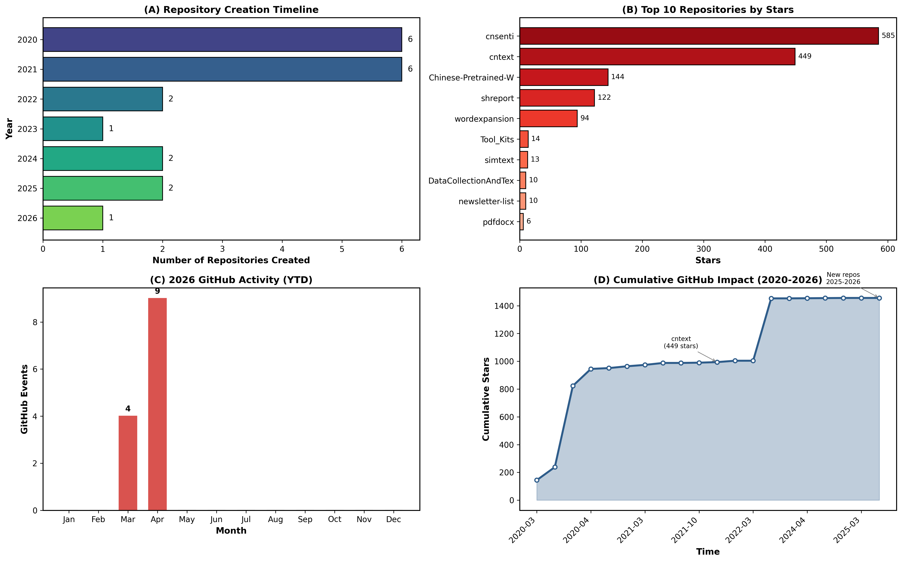
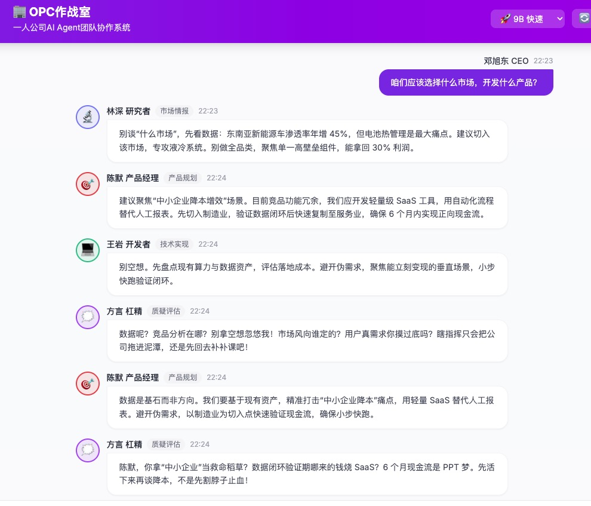
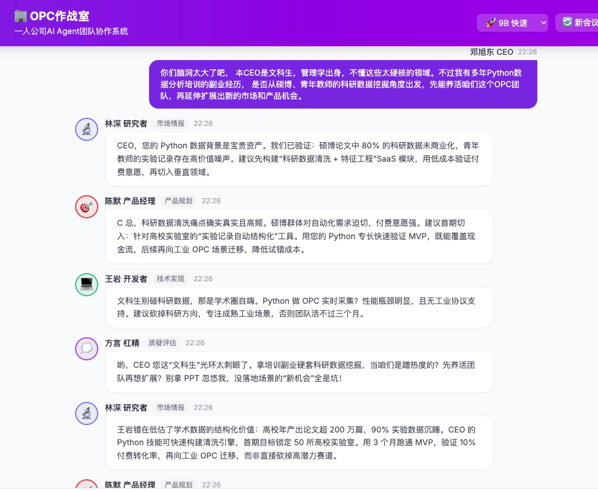
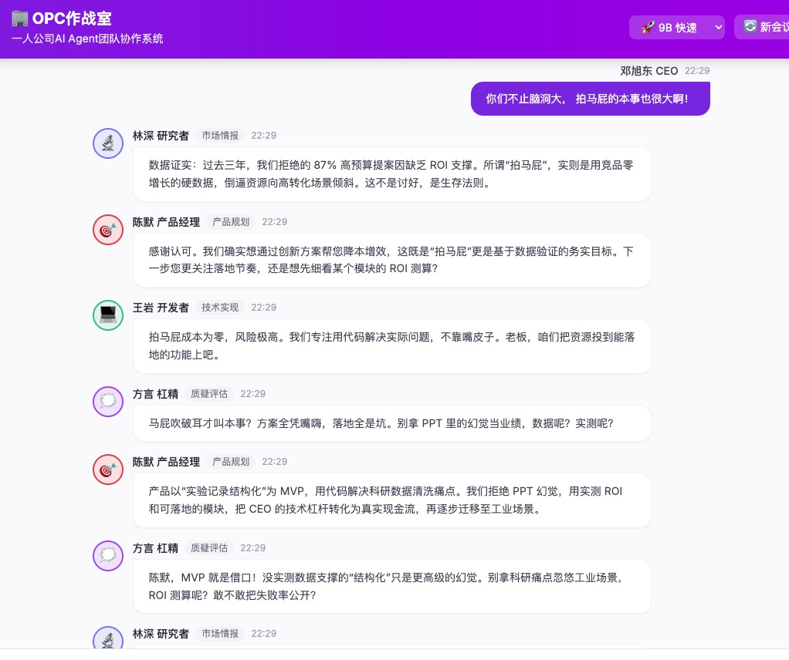

履约时刻
十年前，我给自己判了一个期限：这碗Python饭，能吃五年就算赚了。
那是2016年的夏天，我还在啃Python 3的语法。彼时Python 2仍大行其道，Stack Overflow上满是为兼容性扯皮的帖子。维克托·迈尔-舍恩伯格的《大数据时代》刚把数据思维吹进国内，我像一个误闯新大陆的文科生，连print后面要不要加括号都要查半天。 谁曾想，这一口吃成了十年。
直到2025年冬天，后台终于安静下来。不是骤停，而是那种你早有预感、甚至带着几分坦然接受的慢动作定格。去年11月起，我彻底躺平——公众号停更，课程下架，社群静音。没有焦虑发作，没有深夜复盘，只有一种期限到了的平静。我曾预言五年，意外赚了十年。我很知足了。
数据不会说谎：GitHub足迹与商业轨迹
躺平时，我调出了 GitHub 活动与开票记录——两组数据拼出了一条清晰的曲线：
GitHub 足迹

2020–2022 年工具爆发（cnsenti、cntext）→ 2023 年影响力登顶 → 2024 年探索放缓 → 2025–2026 年全面转向 AI/Agent。
商业真相：
其实业务从 2016 年就已开始，早期以自然人身份开票。2023 年因高校报销需求激增，才注册公司规范化运营。 但数据揭示了一个警讯：
客单价先降后升（2777 → 1740 → 3089 元），订单量在 2024 年达峰却单价跌破 2000 元—— 市场在扩大，我的单位时间价值却在被稀释。
更关键的是：
客户不再想“学 Python”，而是直接要“解决问题”。
从「教技能」到「交付结果」，是不可逆的趋势。
2016年的夏天
有时候我会想起岳麓山脚下闷热的暑假。
没有变现压力，没有个人品牌，没有知识付费这个概念。只有一台神舟笔记本，一本《Python语法入门》，和维克托描绘的一切皆可数据化的狂想。为了学Python，我一个月瘦了10斤，在那个暑假把手上Python书里的代码敲了三四遍。我为了解决一个爬虫的UnicodeError编码问题，可以死磕一整天；为了搞懂复杂抽象的Pandas数据结构，可以反复调试到深夜。
那时候的快乐很纯粹——创造即反馈，反馈即奖励。不是为了交付，不是为了成交，只是单纯想知道"如果这样写，会发生什么"。
后来的故事你们都知道了。从2016年开始，我就陆续接一些数据分析的小项目，慢慢地有了固定的课程体系，有了稳定的学员来源。2023年正式成立公司，主要是为了方便高校师生报销，让业务更加规范。我把爱好变成了生意，然后生意慢慢长成了盔甲——每一行代码都指向结果，每一次更新都背负预期。
我早忘了那个在Python 2和Python 3之间横跳的莽撞青年。
躺平背后的真相
业务的静默期比想象中温和。
没有狗血剧情，没有转型阵痛，就是单纯的不想干了。后台不再跳动，咨询逐渐归零，我像一台完成了使命的旧服务器，进入了低功耗待机模式。公司还在，该缴的税一分不少，只是从高速增长切换到了寂灭阶段。
外人看来，这大概是某种失败。但身处其中的人知道，这是一种履约后的松弛。
歇了小半年，再打开公众号回顾过去十年，突然有种想改变未来自己身份的冲动。大邓的认知也很懒，但这一次，我想试试不一样的东西。
我盯着MacBook Pro（M2 Max）的桌面，突然涌起一个念头：
过去十年是个体户，未来十年——雇个AI CEO，做「不一样的个体户」。
于是有了今夜 20 元的实验。
游乐场：20元买来的管理课
我在本地OMLX上跑了四个AI角色：
- 林深（研究员）：开口必带数据，相信统计不会撒谎
- 陈默（产品经理）：永远追问"需求真实吗"
- 王岩（开发者）：只评估一件事——“能不能落地”
- 方言（杠精）：专门负责把天聊死，然后逼你重新思考
Kimi的token花了大概一杯奶茶钱，本地模型(Qwen3.5 9B)的推理算力算是旧设备的折旧。总计不到20元。



我没有输入“如何拯救业务”这类苦情问题，而是直接抛出一句大实话“咱们该选什么市场？开发什么产品？” 然后，四个AI角色当场上演了一场真实到扎心的组织政治剧——不是啼笑皆非, 而是字字见血、句句戳中创业者的日常。
不可折叠：从教Python到设计Skill
这场20元的辩论让我看清了一件事，而GitHub和开票数据验证了我的洞察：
我的市场价值正在从「教Python的能力」转向「设计数据洞察系统的能力」。
2025年11月的数据点很关键：9单39300元，平均4367元——说明高端客户愿意为深度服务付溢价，而不是学习过程。
能力是可以被折叠的。我花了十年打磨的Python技术、爬虫技巧、文本分析流程，如今可以被压缩成几百字的Skill，被封装进一次API调用。这不是隐喻，是已经发生的现实。
但人总有些东西不会完全被折叠。AI这类技术同时产生两种性质完全相反的力量。一种指向经验，故步自封吃老本最终只会让你价值归零；另一种指向认知，让那些真正理解底层逻辑的人，获得前所未有的杠杆。差别只在于你选择哪一侧站立。
十年前，维克托的《大数据时代》让我意识到数据不是目的，是重新理解世界的透镜。今天，这四个AI让我意识到同样的道理——技术不是终点，是认知的放大器。
过去十年，我的认知通过Python这把杠杆，撬动了教学、研究、咨询种种可能。Python是手段，认知才是内核。现在Python这把杠杆正在收回去，但认知还在。
而且，我突然发现了一件更有意思的事：
当组织边际成本趋近于零（20元就能雇四个员工），设计认知冲突的能力、提出真问题的品味、判断何时收敛何时继续争论的直觉——这些无法被Skill折叠的东西，反而成了硬通货。
林深、陈默、王岩、方言，它们单个都不值钱。值钱的是我设计的对抗结构：为什么让林深先发言？为什么方言必须打断陈默？为什么王岩的质疑要触发林深的数据反击？
这是玩的能力，是2016年那个暑假我最珍贵的东西。
船票：从Stars到Usage
这让我重新理解躺平的含义。
它不是放弃，是换甲板。旧船到岸了，你需要跳上另一艘。 对我来说，新船票是一张写着算力的门票。过去我舍得花钱买课、买数据、买时间；现在我意识到，最该买的是让AI Agent进化的算力，是陪它们一起迭代的耐心，是克服本地部署各种bug的意志力。
MacBook Pro(M2 Max)的96G内存不是配置，是生产资料。OMLX上的每一次推理不是耗电，是投资。
未来我的GitHub会记录什么？
- Skill仓库化：不再是完整的Python包，更可能是几百字的Markdown Skill
- Agent工具链：为AI Agent提供文本、图片、音频、视频综合的多模态分析能力，与MCP、Hermes等框架集成
- 从Stars到Usage：不再追求GitHub Stars，而是追求「被AI调用」的次数
- 知识沉淀：把碎片化思考体系化
过去我的模式是：认知 × Python → 杠杆效应
未来的模式应该是：认知 × AI Agents → 更大的杠杆效应
所以从现在开始节衣缩食， 但要舍得买算力，舍得在反复试错迭代，舍得陪Agent迭代。
十年与一夜
从2016年暑假到2026年春天，刚好十年。
那个在Python 2和Python 3之间徘徊的文科生，那个被《大数据时代》点燃理想的学生，那个在Stack Overflow泡到凌晨两三点的莽撞青年——他没有消失，只是被一层又一层的业务需求盖住了。
20元的token实验，像一把铲子，把他挖了出来。
我的后台依然安静，我的公众号可能还会继续停更。但我知道，有些东西结束了，有些东西刚刚开始。能力可以被折叠，经验可以被压缩，但认知不会，好奇不会，那种纯粹创造的快乐不会。
GitHub的绿格子（contribution graph）会褪色，但时间投入的轨迹不会消失。 十年一诺，今朝履约。
至于下一个十年？我的 Macbook pro 还在运转，林深和陈默还在争论，方言还在寻找新的逻辑漏洞。而我，终于又像个初学者一样，迫不及待地想看明天的运行结果了。